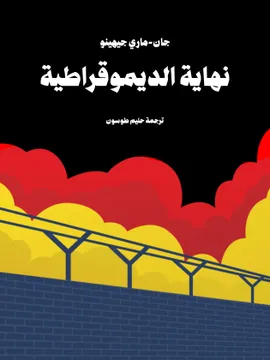

نهاية الديموقراطية

قراءة عربية أصلية محددة النطاق في الصفحات 9، 10 من ملف PDF المرتبط، وليست تلخيصا كاملا للكتاب. نناقش ما تدعمه هذه المقاطع فقط.
هل تظل الديموقراطية حية بعد عام 2000؟
تبدأ مقدمة الكتاب بسؤالها الاستفزازي: هل ستظل الديموقراطية حية بعد عام 2000م؟ بينما العالم الشيوعي ينهار تحت سمعنا وبصرنا. ومع أن أحدًا لا يشك في أن سقوط جدار برلين كان إيذانًا بنهاية حقبة، إلا أنه يتعين تحديد ماهية تلك الحقبة التي ولّت بدقة حتى نقدّر الأبعاد الحقيقية لذلك الحدث. ويرى المتفائلون أن هذه الحقبة بدأت عام 1945م بعد أن ألحقنا الهزيمة بهتلر باسم الكفاح من أجل الديموقراطية، غير أن ذلك الانتصار تحقق بمساعدة ستالين فكان ثمنه خضوع نصف أوروبا للعبودية، وبعد ذلك بخمس وأربعين سنة تحقق النصر كاملًا وبدا وكأن معركة الأفكار حُسمت: فمن ذا الذي يستشهد الآن بلينين ليعترض على مونتيسكيو؟ وهكذا يبدو وكأن تطور الفكر السياسي بلغ مرحلته الأخيرة وأن الجمهورية الليبرالية، وريثة القرن الثامن عشر وفلسفة التنوير، غدت تمثل الشكل النهائي لتنظيم البشرية.
زاوية وحدود القراءة
قراءة في مطلع المقدمة من الصفحتين 9 و10. السؤال المركزي وقراءة لحظة 1989 من نص المؤلف نفسه. حجاج الكتاب عن مستقبل الديموقراطية وأزماتها في الفصول اللاحقة خارج نطاق المقروء.
الطبعة والقراءة
هذه النسخة من الكتاب صادرة ومتاحة مجانًا بموجب اتفاق قانوني بين مؤسسة هنداوي وأسرة السيد الأستاذ حليم طوسون.
تنزيل PDF المجاني ↓ القراءة والمصدر الرسمي ↗